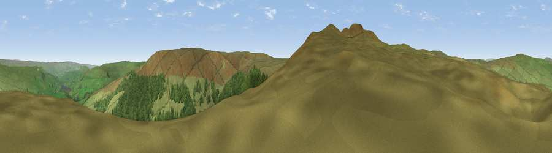

Viewpoint near Gayle
#12739 in England · top 32% of its area beats it · near Gayle · open accessWhere it is
The exact computed spot (SD 88575 83575). Click the marker for map links.
Public access: this spot lies on mapped open-access land (CRoW Act 2000) — you may roam here on foot. Computed from Natural England's CRoW access layer and OpenStreetMap rights of way — not the legal definitive map. Always verify locally.
The view, rendered

A 360° render of this exact spot computed from the terrain model, tree cover and land cover — summer colours, afternoon light, calibrated against photographs of famous viewpoints. Real trees, hedges and buildings will differ in detail.
The panorama
Grey silhouette: terrain skyline in each direction (720 bearings, Earth curvature and refraction included). Dashed green: skyline with trees (+15 m) and buildings (+8 m) as obstacles. Blue strip: how far the ground is visible on each bearing.
Where the view opens
Wedge length = distance to the farthest visible ground on that bearing (vegetation-aware). Rings at 10, 25 and 50 km.
What fills the view
76% grassland · 24% woodland
Angular shares of the visible panorama (visual magnitude), not map area. Landscape diversity 0.24 (0–1 Shannon).
Key numbers
More beautiful places nearby
The staircase of upgrades: each row has a higher view potential than everything closer. Driving times are estimates from straight-line distance, calibrated against real road routing — check an actual route before setting out.
| Place | Direction | Drive | Score |
|---|---|---|---|
| Viewpoint c9665_7763 | SW · 0 km | ~2 min | 62.3 |
| Viewpoint c9662_7809 | ESE · 2 km | ~5 min | 69.4 |
| Drumaldrace | NNW · 3 km | ~8 min | 70.9 |
| Viewpoint near Gayle | WNW · 5 km | ~10 min | 73.6 |
| Viewpoint near Buckden | ESE · 9 km | ~18 min | 77.3 |
| Whernside | W · 15 km | ~26 min | 79.9 |
| Warton Crag | WSW · 41 km | ~60 min | 83.2 |
| Viewpoint near Grange-over-Sands | W · 49 km | ~70 min | 83.4 |
54.24773, -2.17683 · source: screening · position refined by local search. Computed location — check access rights before visiting.